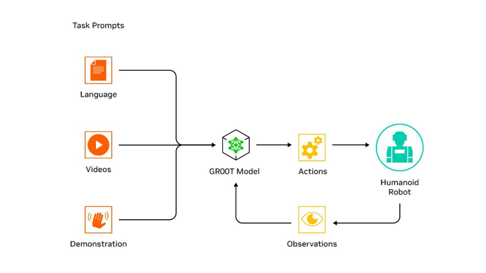
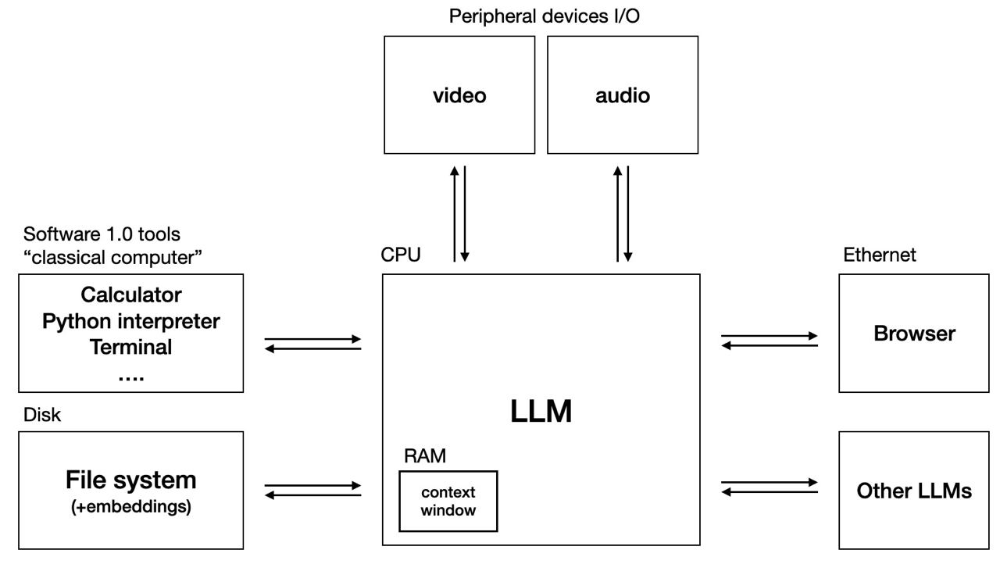
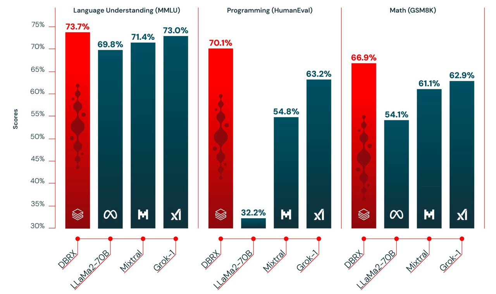
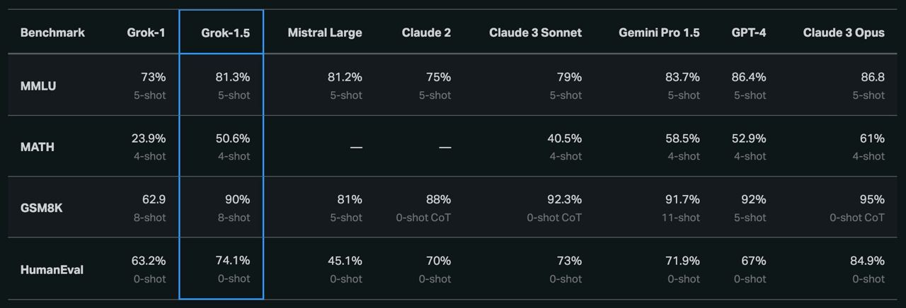
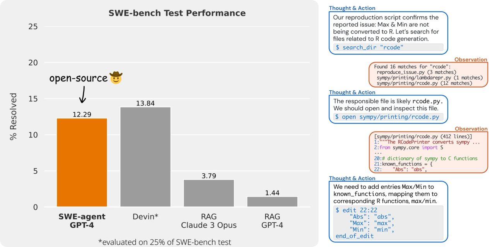
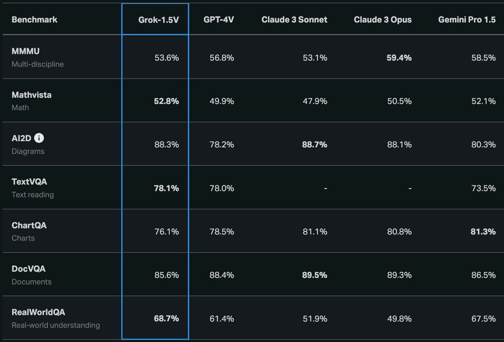

۱. معرفی NVIDIA GROOT
مدل GROOT یک مدل بنیادی مخصوص آموزش رباتهای انساننما در محیط واقعی و شبیهسازی شده است. این مدل توسط جنسن هوآنگ مدیر عامل NVIDIA در کنفرانس GTC معرفی شد. همزمان با معرفی GROOT رباتهای دیزنی (اینجا را بخوانید) روی صحنه حضور پیدا کرده و چاشنی طنز به ارائه جنسن هوآنگ اضافه کردند. GROOT خلاصه عبارت General Robotics 00 Technology بوده و یادآور یکی از شخصیتهای کمیک دنیای مارول با همین نام است. GROOT دیتای چند وجهی (تکست، صوت و ویدئو) و تعاملات قبلی ربات را به عنوان ورودی دریافت کرده و رفتارهای بعدی ربات را براساس آن تولید میکنید (دیاگرام را مشاهده کنید).

۲. پیشرفتهای NVIDIA در حوزه رباتیک
در این ویدئوپیشرفتهای NVIDIA در حوزه رباتیک معرفی شده است. NVIDIA در کنار GROOT دو سرویس OSMO و Isaac Lab را نیز معرفی کرد. OSMO پلتفرم Workflow Orchestration و Isaac Lab پلتفرم شبیهسازی یادگیری تقویتی و Transfer Learning برای انواع ربات است. همچنین NVIDIA چیپ مخصوص رباتهای انساننما را با نام Jetson Thor رونمایی کرد. این چیپ یک SoC (System On Chip) بوده و مخصوص اجرای مدلهای هوشمصنوعی در رباتهای انساننما بهینه شده است.
۳. دیدگاه Andrej Karpathy در مورد AGI
آندره کارپاسی (Andrej Karpathy) از متخصصان برجسته هوشمصنوعی در گفتوگوی اخیرش دیدگاه خود درباره رسیدن به AGI را مطرح کرد. براساس دیدگاه آندره، مسیر رسیدن به AGI از LLM OS میگذرد. ایده LLM OS را آندره اولین بار در توئیتر اعلام کرد (اینجا را بخوانید) که بسیار مورد توجه قرار گرفت. براساس این ایده، LLM به عنوان کرنل با سایر ماژولهای جانبی در تعامل است (اینجا را بخوانید). برای مشاهده ویدئوی کامل اینجا را ببینید. آندره کارپاسی از دانشگاه استنفورد در زمینه هوشمصنوعی مدرک دکتری گرفته و در سالهای اخیر با تسلا و OpenAI همکاری داشته است.

۴. معرفی مدل زبانی DBRX
شرکت Databricks مدل زبانی جدیدی را با نام DBRX به صورت اپنسورس تحت مجوز Open License منتشر کرده است. طبق نتایج منتشر شده، DBRX عملکرد بهتری نسبت به مدلهای GPT 3.5 و Gemini Pro 1.0 دارد. این مدل از معماری MoE استفاده کرده و تا ۲ برابر سرعت بیشتری در Inference نسبت به LLaMA2-70B دارد. سایز این مدل ۴۰ درصد مدل Grok 1 است. در این تصویر عملکرد DBRX در بنچمارکهای مختلف با سایر مدلهای اپنسورس معروف مقایسه شده است. DBRX در دو نسخه Instruct و Base منتشر شده است.

۵. انتشار نسخه 1.5 چتبات Grok توسط xAI
کمپانی xAI نسخه 1.5 چتبات Grok را معرفی کرد. قرار است این نسخه بهزودی از طریق پلتفرم X در دسترس کاربران قرار بگیرد. طول ورودی (Context Window) در این نسخه به ۱۲۸هزار توکن (هر توکن را تقریبا یک لغت در نظر بگیرید) رسیده که ۱۶ برابر نسخه 1 است. در این جدول میتوانید عملکرد نسخه 1.5 را نسبت به نسخه 1 و سایر رقبا در بنچمارکهای مختلف مشاهده کنید. همانطور که مشخص است قابلیت استدلال و حل مساله این نسخه نسبت به نسخه قبلی بهبود قابل توجهی داشته است. نسخه 1 این چتبات اخیرا به صورت اپنسورس در دسترس عموم قرار گرفت (منبع). طبق گفته ایلان ماسک در X، نسخه 2 در حال توسعه است!

۶. رقیب Devin با نام SWE agent معرفی شد
محققان آزمایشگاه NLP دانشگاه پرینستون رقیب ایجنت برنامهنویسی Devin را با نام SWE agent به صورت اپنسورس تحت لایسنس MIT منتشر کردند. این ایجنت برنامهنویسی دقت نزدیک به Devin در حل issueهای گیتهاب (بنچمارک SWE) دارد و از GPT-4 به عنوان LLM استفاده میکند. معرفی Devin در هفتههای گذشته توجه زیادی را به خود جلب کرده بود. این ایجنتها با استفاده از مدلهای بزرگ زبانی و دسترسی به Code Editor ،Shell و اینترنت میتوانند باگها و خطاهای رخ داده در سورس کد را فیکس کنند.
👈 برای نصب این ایجنت و مشاهده سورس کد به اینجا مراجعه کنید.
👈 برای آشنایی با Devin اینجا را بخوانید.

۷. همکاری امریکا و انگلیس در ایمنی هوشمصنوعی
دولتهای آمریکا و انگلیس در یک تفاهمنامه جدید توافق کردند با همکاری یکدیگر و با اشتراکگذاری اطلاعات و منابع یک شیوه مشترک برای تست ایمنی هوشمصنوعی توسعه دهند. همچنین در این همکاری قرار است مدلهای موجود هوشمصنوعی از نظر ایمنی مورد ارزیابی قرار بگیرند (منبع).
۸. معرفی مربی فوتبال توسط گوگل DeepMind
گوگل DeepMind مدل جدیدی به نام TacticAI را برای پیشبینی نتیجه کرنر در بازی فوتبال معرفی کرد. این مدل با همکاری باشگاه لیورپول توسعه داده شده است. در این مدل هر بازیکن به منزله یک نود در گراف بوده که با استفاده از Graph Neural Network براساس موقعیت بازیکنهای هر دو تیم نتیجه کرنر را پیشبینی میکند (منبع).
۹. نسخه ۲ مدل Stable Audio توسط Stability AI منتشر شد.
این نسخه میتواند بر اساس متن ورودی (prompt) موسیقی stereo با فرکانس 44.1 kHz به طول حداکثر سه دقیقه تولید کند. یکی از قابلیتهای جالب توجه این نسخه امکان آپلود کردن صدا/موسیقی نمونه است! به عنوان مثال کاربر میتواند موسیقی مدنظر خود را زمزمه کرده و صدای خود را به عنوان ورودی به مدل بدهد. Stable Audio 2 با استفاده از دیتاست AudioSparx آموزش داده شده است.
👈 برای تست کردن این مدل اینجا را مشاهده کنید.
۱۰. دموی ربات انساننمای آپولو
۱۱. حمایت کاخ سفید از تولید تراشه در خاک آمریکا
به دلیل وابستگی کشور آمریکا به تراشههای پیشرفته و تمرکز تولید آن در تایوان توسط TSMC کاخ سفید از سالها پیش سیاست کاهش این وابستگی را در پیش گرفته است. اخیراً شرکت تایوانی TSMC با دریافت ۱۱ میلیارد دلار وام و کمک هزینه ترغیب شد که سه کارخانه جدید در ایالت آریزونا راهاندازی کند. ارزش کل این سرمایهگذاری ۶۵ میلیارد دلار بوده که منجر به تولید ۲۵ هزار شغل در آمریکا خواهد شد. تولید تراشه در خاک آمریکا از وابستگی این کشور به بیرون کاسته و از طرفی کنترل آن روی توزیع تراشه را بیشتر میکند. در حال حاضر آمریکا به خاطر رقابت با چین به شکلهای مختلفی مانع صادرات تراشه به این کشور شده است. از طرفی تولید تراشههای پیشرفته در خاک تایوان و تنشهای سیاسی در آن منطقه منجر به نگرانی آمریکا نسبت به تامین این تکنولوژی شده است. بر این اساس کنگره آمریکا با تصویب CHIPS Act زمینه حمایت از تولید تراشه در خاک آمریکا را در سالهای گذشته فراهم کرده است.
👈 ادامه مقاله را اینجا بخوانید.
👈 برای آشنایی بیشتر با جنگ تراشه اینجا را بخوانید.
۱۲. معرفی مدل زبانی جدید توسط Stability AI
شرکت Stability AI مدل زبانی جدیدی به نام Stable LM 2 12B را معرفی کرد. این مدل ۱۲ میلیارد پارامتر داشته و به صورت اپنسورس منتشر شده است. علاوه بر زبان انگلیسی ۶ زبان اروپایی دیگر را نیز پشتیبانی میکند.
👈 برای چت کردن با این مدل اینجا را ببینید.
👈 برای مشاهده نتایج مقایسه این مدل با نمونههای مشابه اینجا را بخوانید.
۱۳. معرفی نسخه ۲ Imagen
نسخه ۲ مدل Imagen گوگل DeepMind در آپدیت جدید میتواند متن را به ویدئوی کوتاه ۴ ثانیهای تبدیل کند. این مدل از تکنولوژی Diffusion استفاده کرده و برای مشخص کردن محتوای تولید شده توسط AI از SynthID استفاده میکند (منبع).
۱۴. مدل جدید Mistral
کمپانی فرانسوی Mistral نسخه جدید مدل زبانی خود را با نام Mixtral 8×22B منتشر کرد. این مدل از معماری MoE استفاده کرده و دارای Context Window به سایز ۶۵ هزار توکن است (هر توکن را معادل یک لغت در نظر بگیرید). تعداد پارامترهای این مدل ۱۷۶ میلیارد بوده و دارای سایز ۲۸۱ گیگابایت است. اطلاعات دانلود این مدل از تورنت در اینجا منتشر شده است.
۱۵. ساخت پردازندههای اختصاصی توسط کمپانیهای بزرگ
با سودآوری حیرتانگیز کمپانی NVIDIA در موج هوشمصنوعی کمپانیهای بزرگ تلاشها برای ساخت پردازندههای اختصاصی را بیشتر کردهاند. در روزهای اخیر شاهد معرفی پردازنده ARM-based جدید توسط گوگل با نام Google Axion و نسخه جدید تراشه MTIA توسط متا بودهایم. علاوه بر گوگل و متا کمپانیهای بزرگ دیگری نظیر آمازون و IBM نیز در این زمینه در حال توسعه و پیشرفت هستند.
👈 برای آشنایی بیشتر با تراشه گوگل اینجا را بخوانید.
👈 برای آشنایی بیشتر با تراشه متا اینجا را بخوانید.
۱۶. بزرگترین دیتاست SQL منتشر شد
بزرگترین دیتاست Text-to-SQL توسط Gretel Navigator به صورت اپنسورس تحت لایسنس Apache 2 منتشر شد. این دیتاست میتواند برای fine-tune کردن مدلهای زبانی پایه در نوشتن کدهای SQL مورد استفاده قرار بگیرد.
۱۷. نسخه ۳ پردازنده Gaudi معرفی شد
نسخه ۳ پردازنده Gaudi توسط اینتل معرفی شد. این پردازنده مخصوص هوشمصنوعی و مدلهای بزرگ زبانی بهینه شده و قرار است با پردازندههای ساخت NVIDIA در این حوزه رقابت کند. این پردازنده را قبلاً در اینجا معرفی کردهام. برای جزئیات فنی بیشتر درباره نسخه ۳ اینجا را بخوانید.
۱۸. تولید موسیقی با هوشمصنوعی توسط Udio
استارتاپ Udio با جذب سرمایه ده میلیون دلاری به عنوان یکی از جدیدترین ابزارهای تولید موسیقی توسط AI وارد رقابت با نمونههای مشابه نظیر Suno و Stable Audio شد. در حال حاضر این ابزار میتواند با دریافت متن وردی شامل ژانر، شعر و هنرمند الهامبخش موسیقی مورد نظر کاربر را با طول حداکثر ۴۰ ثانیه تولید کند. این استارتاپ توسط یکی از محققان سابق DeepMind و با جذب سرمایه از a16z، موسس اینستاگرام و will.i.am راهاندازی شده است. برای کار کردن با این ابزار و شنیدن نمونههای بیشتر اینجا را نگاه کنید.
۱۹. اضافه شدن دکتر Andrew Ng به هیئت مدیره آمازون
دکتر Andrew Ng به عنوان عضو هیئت مدیره به آمازون پیوست. Andrew Ng از افراد سرشناس در حوزه هوشمصنوعی است. پیوستن ایشان به آمازون نشاندهنده برنامهریزی این کمپانی برای تمرکز بیشتر در حوزه AI است (منبع).
۲۰. اضافه شدن بینایی به چتبات Grok1.5
در آپدیت جدید Grok قابلیت پردازش دیتای تصویری نیز به این مدل اضافه شد. این نسخه که با نام Grok-1.5V معرفی شده با مدلهای مشابه در بنچمارکهای مختلف در تصویر مقایسه شده است. این مدل همانند نمونههای مشابه میتواند به سوالات کاربر حول یک تصویر پاسخ دهد، برای تصاویر کپشن نوشته و یا حتی با تصویر فلوچارت برای آن کد بنویسد (منبع)!

۲۱. تولد نسل جدید Atlas!
بوستون داینامیکز با معرفی نسخه الکتریکی Atlas حضور جدی خود را در رقابت رباتهای انساننما اعلام کرد. نسخه قبلی هیدرولیکی بود. در موتورهای هیدرولیکی فشار و جریان سیالات به حرکت تبدیل میشود. هر گونه آسیب و سوراخ شدن در این موتورها منجر به از کار افتادن آن میشد. نمونههای این حادثه در تستهای نسخه قبلی مشهود بود. موتورهای الکتریکی حرکت روانتری را برای ربات فراهم کرده و هزینه تمام شده را کاهش میدهند.
۲۲. نسخه ۳ مدل زبانی Llama منتشر شد
متا نسخه ۳ مدل اپنسورس Llama را در سایزهای ۸ و ۷۰ میلیارد پارامتر منتشر کرد. طول Context Window در این نسخه ۸ هزار توکن است. قرار است به زودی این نسخه در پلتفرمهای مختلف کلاد در دسترس قرار بگیرد. نسخه ۳ با ۱۵ تریلیون توکن در یک کلاستر با ۲۴ هزار GPU آموزش داده شده است. سایز دیتاست آن ۷ برابر دیتاست نسخه ۲ است. این دیتاست از منابع عمومی گردآوری شده است و حدود ۳۰ زبان مختلف را در بر میگیرد، با این وجود کیفیت آن برای تمامی زبانها اندازه انگلیسی نیست. طبق ادعای متا ایمنی این نسخه توسط متخصصان داخلی و خارجی مورد تست قرار گرفته و مکانیزمهای مختلفی برای آن در نظر گرفته شده است. قابل ذکر است که نسخه ۴۰۰ میلیارد پارامتری این مدل در حال Training است. برای مطالعه جزئیات فنی و مقایسه آن با مدلهای مشابه اینجا را بخوانید.
اگر مایل به دریافت خبرنامه هوشمصنوعی دومان در پستالکترونیک خود هستید از اینجا ثبتنام کنید. همچنین میتوانید با عضویت در کانال تلگرام این خبرنامه در سریعترین زمان در جریان اخبار جدید قرار بگیرید. برای مطالعه شمارههای قبلی اینجا را نگاه کنید.


دیدگاه خود را بنویسید